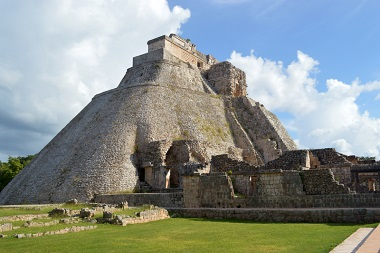

Enjoy The Travel With Your Loved Ones!
About Cancun
On a 21-kilometer-long, 400-meter-wide L-shaped island off the north coast of Yucatán, Cancún is a purpose-built luxury resort with an excellent tourist infrastructure. This large vacation center was built up from virtually nothing in little more than a decade and is now one of the most visited destinations in Mexico, attracting more than four million tourists annually. It's blessed with glorious white-sand beaches, coral banks, and near perfect weather. The prime tourist area is linked by a causeway to the mainland on which the modern city of Cancún itself stands, a vibrant hub with a number of interesting attractions worth visiting.